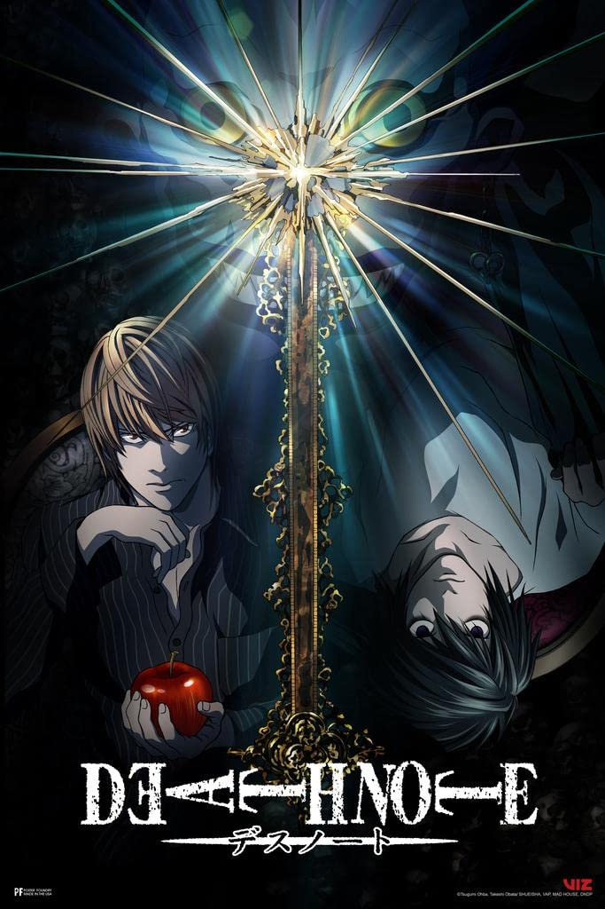
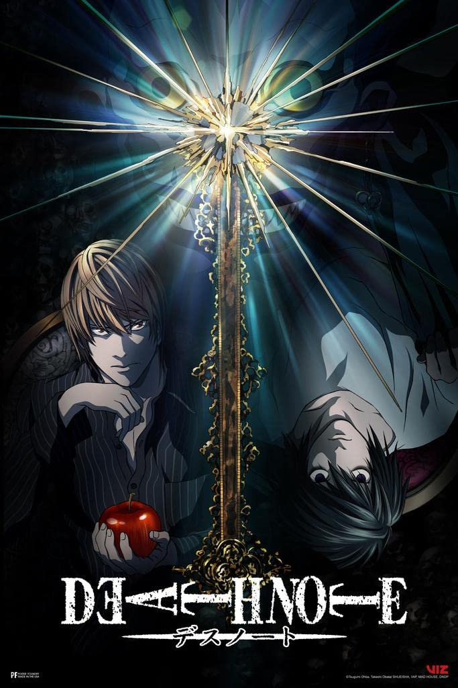

|Livre| 2006 ‧ Comédia ‧ 1h 30m
O touro Otis gosta de cantar e tocar como todos os outros animais do celeiro quando o agricultor está fora. No entanto, o bovino despreocupado deve encontrar coragem para ser um líder quando, inesperadamente, ele se encontra em uma posição de grande responsabilidade.


 
